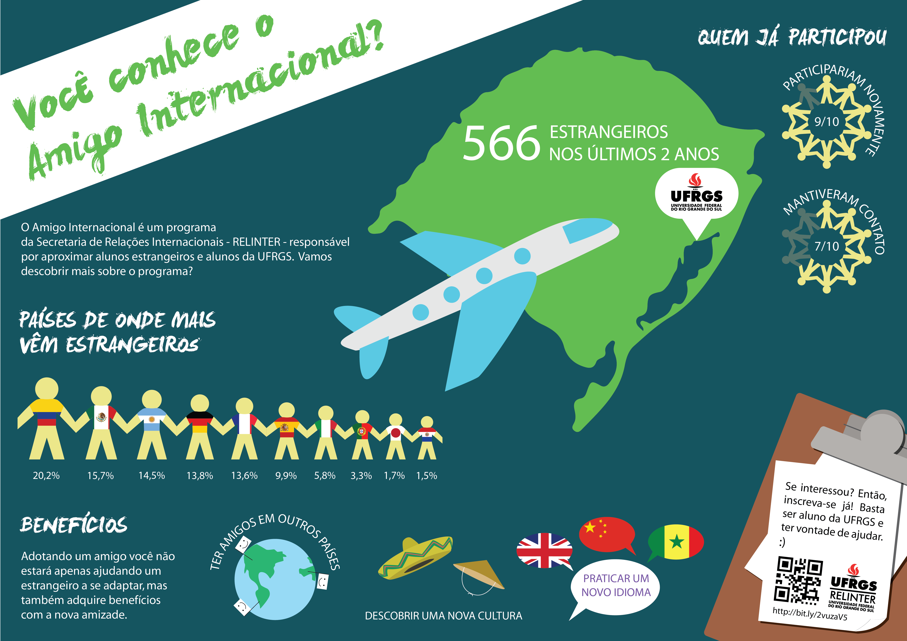

O programa Amigo Internacional da UFRGS procura integrar alunos estrangeiros com os alunos da universidade. Como não havia muita divulgação por parte da UFRGS, resolvi produzir um infográfico para o trabalho final da disciplina de Projeto Visual II. Optei por um cartaz A3, para ser exibido em corredores e chamar a atenção através das cores e elementos.
Falar um pouco mais do processo
